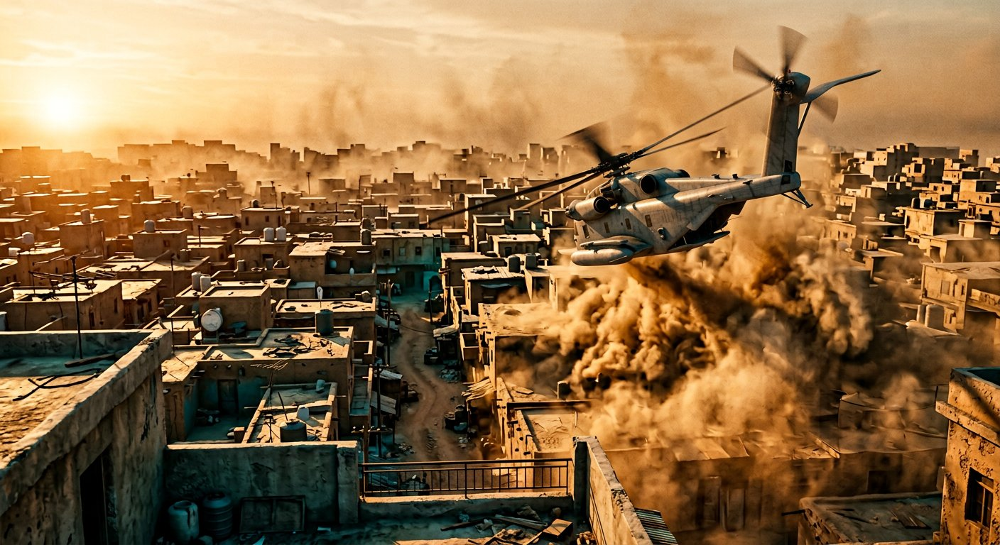
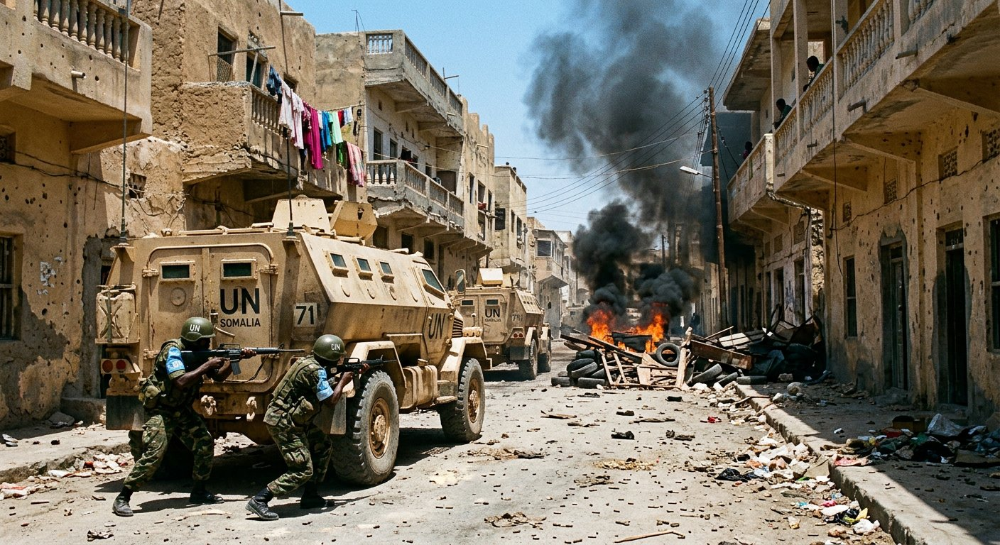

1
Irene
Nom de code de l'opération. Insertion héliportée au-dessus du marché de Bakara pour capturer deux lieutenants de Mohamed Farrah Aidid. Chapitre d'introduction : maniement, descente en rappel, premiers contacts urbains.
Sept chapitres, Mogadiscio 1993, Operation Gothic Serpent. Gratuite pour tous les joueurs depuis sa sortie — et la meilleure école de gunplay du jeu.


| Nom | Black Hawk Down |
| Type | Campagne solo et coopérative (jusqu'à 4 joueurs) |
| Sortie | 21 février 2025 |
| Prix | Gratuite pour tous les joueurs depuis sa sortie |
| Cadre | Mogadiscio, Somalie, octobre 1993 — Operation Gothic Serpent |
| Inspiration | Adaptation du film Black Hawk Down de Ridley Scott (2001) et des événements réels de la bataille de Mogadiscio. |
| Moteur | Refonte complète sous le moteur de Delta Force avec cinématiques, doublage et scènes scriptées. |
Nom de code de l'opération. Insertion héliportée au-dessus du marché de Bakara pour capturer deux lieutenants de Mohamed Farrah Aidid. Chapitre d'introduction : maniement, descente en rappel, premiers contacts urbains.
La situation dégénère. La foule et les miliciens convergent. Gestion des angles urbains, suppression, premiers RPG.
Le Super Six-One est abattu. Chapitre pivot : sécuriser le site du crash sous un feu continu.
Le convoi terrestre se perd dans le dédale de Mogadiscio. Combat véhiculé, navigation sous embuscade permanente.
Les snipers Delta Shughart et Gordon se portent volontaires pour défendre le second site de crash. Chapitre le plus dur émotionnellement de la campagne.
Night Stalkers Don't Quit — devise du 160th SOAR. Soutien aérien et extraction des éléments isolés.
Le repli à pied vers le stade pakistanais. Finale : progression sous le feu, gestion des munitions, survie pure.